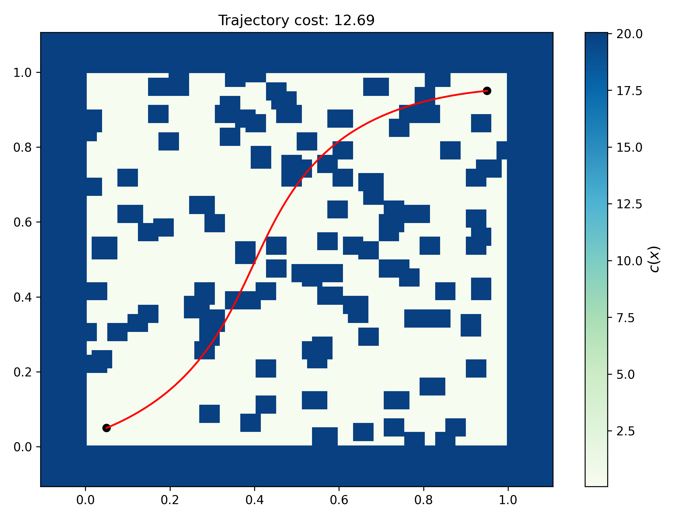

Rover Trajectory Problem
The rover trajectory problem is introduced in Batched Large-scale Bayesian Optimization in High-dimensional Spaces article as a high-dimensional blackbox optimization benchmark problem. In this problem, a rover must move through a 2D domain while avoiding obstacles and reaching a target location with a low-cost trajectory. The objective is not to optimize a closed-form function but to evaluate a trajectory defined by a set of control points. The trajectory is parameterized by a smooth B-spline and the cost of the path is computed by integrating pointwise penalties over the path. Even though the Rover problem is posed as a blackbox optimization problem, it can be treated as general purpose blackbox problem.
Basic usage
The following example demonstrates how to use the Rover problem class from Blackbox. Specifically, the Rover problem class is initialized, a Latin hypercube sampling plan is created, and is evaluated using the initialized problem class. Lastly, trajectory associated with one of the samples is also plotted.
from pyDOE3 import lhs
from blackbox.rover_trajectory_problem import Rover, plot_traj
dim = 80
force_start = True
force_goal = True
# create rover object
problem = Rover(dim=dim, force_start=force_start, force_goal=force_goal)
# create sampling plan
x = lhs(problem.dim, 10, criterion="cm", random_state=10)
x = problem.lb + (problem.ub - problem.lb) * x
# evaluate sampling plan
y = problem(x)
print(f"Problem dimension: {problem.dim}")
print(f"\nSampling plan:\n{x}")
print(f"\nOutput:\n{y}")
# plot trajectory for first sample
plot_traj(control_points=x[0], rover=problem, show_figure=False)
The interface is straight-forward to use. The main class is Rover which is imported from blackbox.rover_trajectory_problem. Once this class is initialized, it can be called to evaluate trajectories defined by the control points.
Initialize the problem:
problem = Rover(dim=dim, force_start=force_start, force_goal=force_goal)The
dimargument controls the dimension of the search space. In this implementation, the rover trajectory is defined by a set of B-spline control points, and the total problem dimension determines how many control points are used. If you setdimas 60, then there will be 30 (x,y) pairs that define the control points in the 2D space. Theforce_startandforce_goalflags keep the trajectory anchored at the start and goal locations when set toTrue. There are other arguments that can be used during initialization, refer to the API documentation.Generate a sampling plan:
The example uses a Latin hypercube sample:
x = lhs(problem.dim, 10, criterion="cm", random_state=10)Followed by scaling into the problem domain:
x = problem.lb + (problem.ub - problem.lb) * xThis creates a sampling plan of 10 designs, each of dimension
problem.dim. In other words, each row ofxis one trajectory parameterization. In this example, the shape ofxis (10,80), where 10 denotes the number of samples and 80 refers to the problem dimension. There will be 40 controls points in the space.Evaluate samples:
y = problem(x)The initialized
Roverobject (problemvariable in this case) accepts either a numpy array of shape(dim,)or a 2D array of shape(n_samples, dim). The returned value is the trajectory cost associated with each sample. When a single design is passed, the result is a 1D array-like scalar output; when several designs are passed together, a 2D numpy array is returned. You can save thexandyas annpzormatfile for later use.Plot a trajectory:
plot_traj(control_points=x[0], rover=problem, show_figure=False)The
plot_trajhelper function plots the path over the obstacle field for a given set of control points. The function also displays the obstacle cost map, the start and goal positions, refer to API documentation for more details about the function. The figure below shows the output from theplot_trajfunction. The red curve is the evaluated path, the background colormap is the environment cost, and the black markers indicate the start and goal positions.

